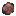
鉱石とミネラル
鉱石とミネラル
TerraFirmaCraft の鉱石と鉱物は希少です。バニラとは異なり、鉱石が一つ当たり大量に含まれる希少な鉱脈で見つかり、見つけるには 探鉱 が必要です。 異なる鉱石は、異なる種類の岩石や異なる標高にも出現します。つまり、適切な高度で適切な種類の岩石を見つけることが、探している鉱石を見つける鍵となります。
In addition, some ores are Graded. Ore blocks may be Poor, Normal, or Rich, and different veins will have different concentrations of each type of block. Veins that are richer are more lucrative.
The next several pages show the different types of ores, what they look like, and where to find them.
自然銅
Native Copper is an ore of Copper metal. It can be found in Igneous Extrusive rocks, at elevations above y=40.
It can also be found in deposits in rivers, which can be panned.
Native Copper Ores in Dacite.
自然金
Native Gold is an ore of Gold metal. It can be found at elevations below y=70, but deeper veins are larger and richer. It can be found in Igneous Extrusive and Igneous Intrusive rocks.
It can also be found in deposits in rivers, which can be panned.
Native Gold Ores in Diorite.
自然銀
Native Silver is an ore of Silver metal. Small poor veins can be found in Granite or Diorite in uplift regions, above y=90. Larger and richer veins can be found in Granite, Diorite, Schist, and Gneiss deep underground below y=20.
It can also be found in deposits in rivers, which can be panned.

Native Silver Ores in Granite.
安四面銅鉱
Tetrahedrite is an ore of Copper metal. It can be found at any elevation, but deeper veins are often richer. It can be found in Metamorphic rocks.
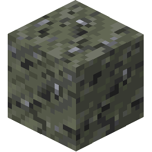Tetrahedrite Ores in Schist.
孔雀石
Malachite is an ore of Copper metal. It can be found primarily in Marble or Limestone, Chalk, and Dolomite. It can be found at most elevations, however deeper veins are often larger and richer.
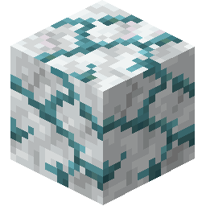Malachite Ores in Marble.
錫石
Cassiterite is an ore of Tin metal. It can be found in Igneous Intrusive rocks at high elevation, above y=80 in uplift regions or in dikes.
It can also be found in deposits in rivers, which can be panned.
Cassiterite Ores in Diorite.
輝蒼鉛鉱
Bismuthinite is an ore of Bismuth metal. It can be found in Sedimentary rocks near the surface, or larger and richer veins in Igneous Intrusive rocks deep underground.
Multiblock
Bismuthinite Ores in Shale.
珪ニッケル鉱
Garnierite is an ore of Nickel metal. It can be found at elevations below y=0. It can be found primarily in Gabbro deep underground. Smaller, rarer veins can also be found in any Igneous Intrusive rock.
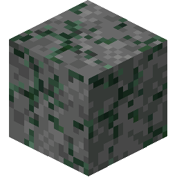Garnierite Ores in Gabbro.
赤鉄鉱
Hematite is an ore of Iron metal. It can be found in large veins in any Igneous Extrusive rocks near the surface.
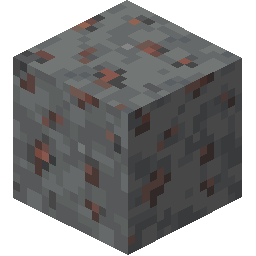Hematite Ores in Andesite.
磁鉄鉱
Magnetite is an ore of Iron metal. It can be found in large veins in any Sedimentary rocks near the surface.
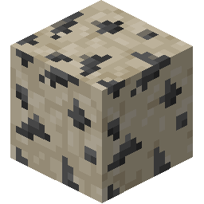Magnetite Ores in Limestone.
褐鉄鉱
Limonite is an ore of Iron metal. It can be found in large veins in any Sedimentary rocks near the surface.
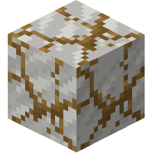Limonite Ores in Chalk.
閃亜鉛鉱
Sphalerite is an ore of Zinc metal. Small, poor veins can be found in Igneous Extrusive rocks near the surface, and large richer veins can be found in Igneous Intrusive rocks deep underground.
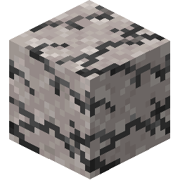Sphalerite Ores in Quartzite.
褐炭
Lignite is a type of low-grade Coal ore. It can be found in very large flat deposits near the surface in Sedimentary rocks.
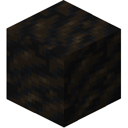Lignite in Dolomite.
瀝青炭
Bituminous Coal is a type of mid-grade Coal ore. It can be found in very large flat deposits near the surface in Sedimentary rocks.
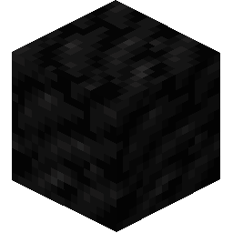Bituminous Coal in Chert.
カオリナイト
Kaolinite is a soft Mineral which is used in the construction of Fire Clay. It can be found spawning at high altitudes in Plateaus, Old Mountains, and Highlands, at a temperature of at least 18°C, with a rainfall of at least 300mm.
Multiblock
Variants of kaolin clay.
黒鉛
Graphite is a Mineral which is used in the construction of Fire Clay. It can be found in Gneiss, Marble, Quartzite, and Schist rocks, in elevations below y=60.
Graphite in Gneiss.
辰砂
Cinnabar is a Mineral which can be ground in the Quern to obtain Redstone Dust. It can be found in veins deep underground, in Quartzite, Granite, Phyllite, and Schist.
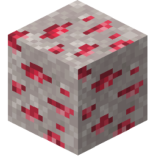Cinnabar in Quartzite.
氷晶石
Cryolite is a Mineral which can be ground in the Quern to obtain Redstone Dust. It can be found in veins deep underground, in Granite, and Diorite.
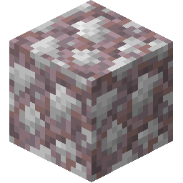Cryolite in Granite.
硝石
Saltpeter is a Mineral which can be ground in the Quern, and then used in the crafting of Gunpowder. It can be found in very large flat deposits near the surface in Sedimentary rocks.
Multiblock
Saltpeter in Shale.
硫黄
Sulfur is a Mineral which can be ground in the Quern, and then used in the crafting of Gunpowder. It is found near lava level deep underground, in sparse but large and plentiful veins, in any Metamorphic or Igneous Intrusive rock.
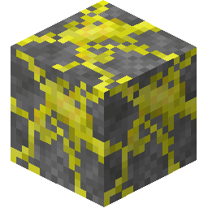Sulfur in Gabbro.
カリ岩塩
Sylvite is a Mineral which can be ground in the Quern, and then used as a Fertilizer. It can be found in very large flat deposits near the surface in Shale, Claystone and Chert.
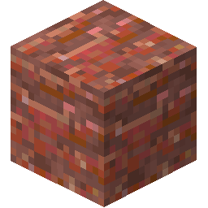Sylvite in Chert.
ホウ砂
Borax is a Mineral which can be ground in the Quern to produce Flux. It can be found in very large flat deposits near the surface in Claystone, Limestone, and Shale.
Multiblock
Borax in Shale.
石膏
Gypsum is a decorative Mineral which can be used to make Alabaster. It can be found in very large flat deposits near the surface in Sedimentary rocks.
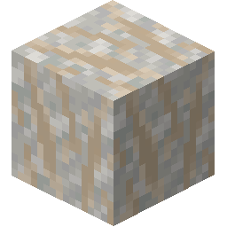Gypsum in Chalk.
岩塩
Halite is a Mineral which can be ground in the Quern to make Salt, which is an important Preservative. It can be found in very large flat deposits near the surface in Sedimentary rocks.
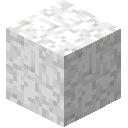Halite in Chalk.
エメラルド
Emerald is a decorative Gemstone. It looks quite pretty, maybe if you could find someone else in this incredibly lonely world you could trade it with them...
It appears in thin vertical ore formations which can be up to a hundred blocks tall. It can be found in Igneous Intrusive rocks.
Emerald in Diorite.

キンバーライト
Kimberlite is a decorative and priceless Gemstone. It appears in thin vertical ore formations called Kimberlite Pipes which can be up to a hundred blocks tall. It can only be found in Gabbro.
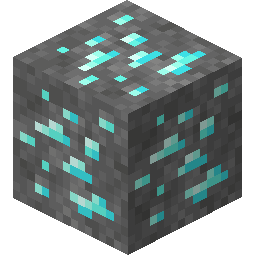Kimberlite in Gabbro.
ラピスラズリ
Lapis Lazuli is a decorative Mineral which can be used to make Dye. It can be found in large, but sparse veins in Limestone and Marble, between y=-20 and y=80.
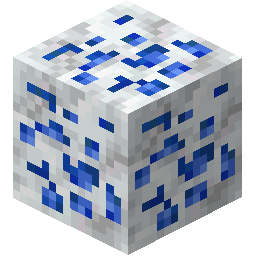Lapis Lazuli in Marble.
Amethyst
Amethyst is a decorative Mineral which can be used to make Dye and Glass. It can be found in Sedimentary) and Metamorphic rock beneath rivers above y=40.
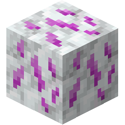Amethyst in Marble.
Opal
Opal is a decorative Mineral which can be used to make Dye. It can be found in Sedimentary) and Igneous Extrusive rock beneath rivers above y=40.
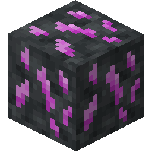Opal in Basalt.